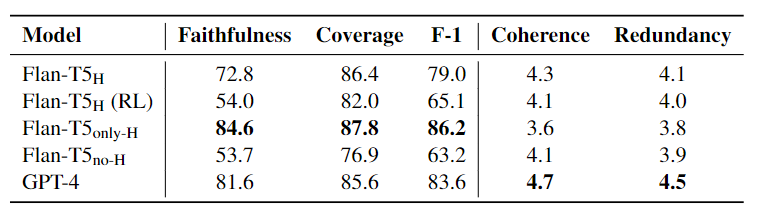

🤗
Dataset🔎
Data Demonstration🤗
Explorer🤗
LeaderboardGrounded text generation, encompassing tasks such as long-form question-answering and summarization, necessitates both content selection and content consolidation. Current end-to-end methods are difficult to control and interpret due to their opaqueness. Accordingly, recent works have proposed a modular approach, with separate components for each step. Specifically, we focus on the second subtask, of generating coherent text given pre-selected content in a multi-document setting. Concretely, we formalize Fusion-in-Context (FiC) as a standalone task, whose input consists of source texts with highlighted spans of targeted content. A model then needs to generate a coherent passage that includes all and only the target information. Our work includes the development of a curated dataset of 1000 instances in the reviews domain, alongside a novel evaluation framework for assessing the faithfulness and coverage of highlights, which strongly correlate to human judgment. Several baseline models exhibit promising outcomes and provide insightful analyses. This study lays the groundwork for further exploration of modular text generation in the multi-document setting, offering potential improvements in the quality and reliability of generated content.
The Fusion in Context (FiC) task involves synthesizing a coherent text from a given set of documents, specifically focusing on pre-selected spans within these documents, referred to as highlights. Formally, for a collection of documents D with marked spans H={h_1, h_2, ..., h_n}, where each h_i could be disjoint, the goal is to produce a coherent and non-redundant text f adhering to the following two criteria:
Given a document set and a corresponding reference summary from an existing multi-document summarization dataset,
the annotation process aims to identify the spans in the source documents that cover all the information in summary.
This approach simplifies the annotation process compared to annotating from scratch, i.e., reading documents,
marking highlights according to some specifications, and writing a coherently-fused text, which is reminiscent
of standard formation of multi-document summarization datasets. Conversely, our approach requires locating
and aligning spans between the source text and the already available reference summary, essentially
"reverse engineering" the original human summarization process.
To construct our dataset, we leverage existing multi-review summarization datas from the business reviews domain
(Brazinskas et al., 2020 and
Iso et al., 2022).
In total, we annotate 1000 instances of review-set with highlights/summary pairs.
To evaluate highlights faithfulness and coverage, we introduce two NLI-based evaluation metrics:
for Faithfulness, we utilize the flan-t5-xxl model (Chung et al., 2020) with an NLI prompt,
and for Coverage, we finetune a flan-t5-large model (Chung et al., 2020)
using a syntactic dataset derived from our annotated FiC dataset.
Our meta-evaluation, based on these metrics' correlation with human judgments across
50 generated outputs, confirms their effectiveness in aligning with human judgments.
Our analyses reveal that GPT-4 exhibits a notable proficiency in ensuring highlights faithfulness coverage when provided with in-context examples. However, a finetuned version appears to slightly underperform in faithfulness compared to GPT-4, despite showing marginal improvements in coverage. Further, we also perform an ablation study on our finetuned model, employing only concatenated highlights without the surrounding context (only-H) We find that though it leads to an increase in faithfulness and coverage, this method significantly harms the coherence and non-redundancy nature of the output, as determined through manual evaluation via crowdsourcing.

@misc{slobodkin2024multireview,
title = {Multi-Review Fusion-in-Context},
author = {Aviv Slobodkin and Ori Shapira and Ran Levy and Ido Dagan},
year = {2024},
eprint = {2403.15351},
archivePrefix = {arXiv},
primaryClass = {cs.CL}
}